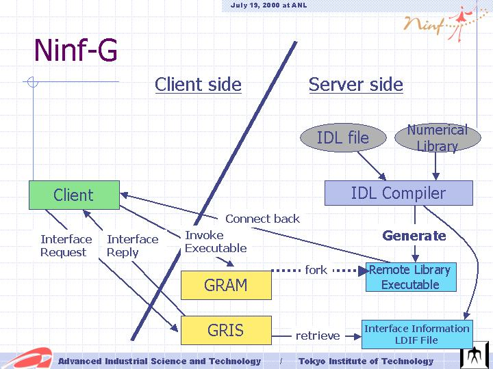

Ninf-G is a Grid RPC system built on top of Globus Tookit. Ninf-G uses MDS for information sharing, GRAM for server-side executable invocation and Globus I/O for client-server communication. Basic client API is same as current version of Ninf. Here is overview of Ninf-G. A detailed paper(sorry, it is in Japanese) is available here. The first beta version of Ninf-G will be published by the end of 2001.
Å@
